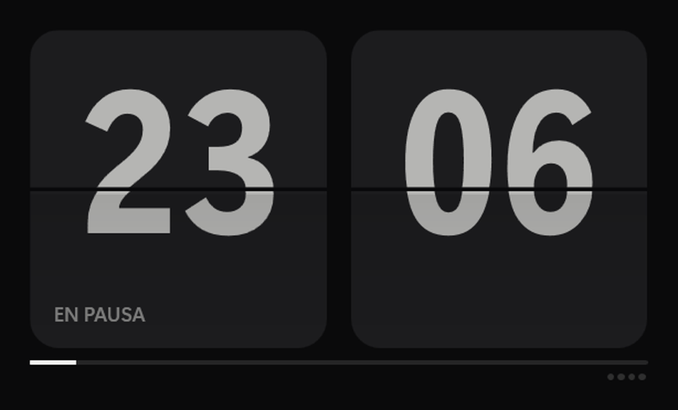
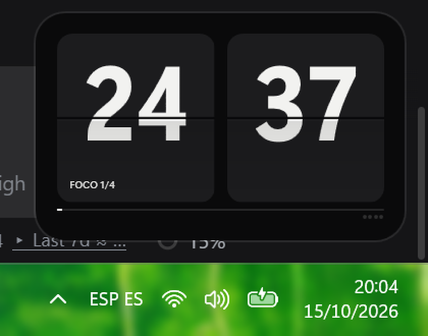
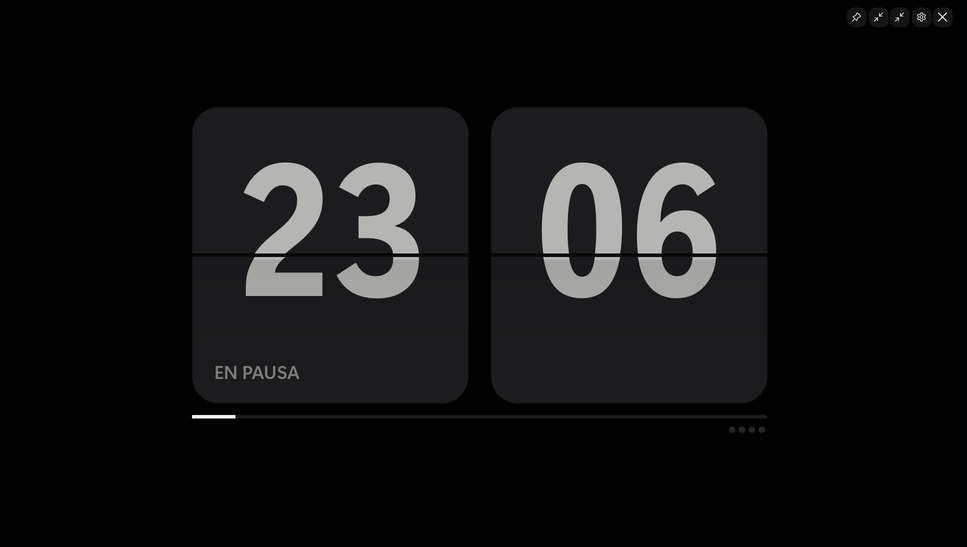

A flip-clock timer that sits in the corner of your screen while you work. Always on top, around 60 MB of memory, nothing to sign up for.
Windows 10 or 11, 64 bits · Free · About 63 MB · Nothing to install
FlipFocus.exe. That is it: it starts and stays in your corner.The first time, Windows may show a blue warning because the app is not signed yet. Click More info and then Run anyway. It will not ask again.



Space start or pause Ctrl + Alt + P start or pause anywhere Esc leave fullscreen Ctrl + Alt + M mini / normal F fullscreen Ctrl + Alt + F fullscreen M / N mini / normal Ctrl + Alt + C restart cycle A settings Ctrl + Alt + N notifications on/off C restart cycle Ctrl + Alt + H hide or show window
Around 47 MB while idle and 61 MB while running, using under 2 per cent of one processor core. The app never connects to the internet and collects nothing. Your settings live in one file you can delete.
Un reloj de pestañas que se queda en la esquina de tu pantalla mientras trabajas. Siempre encima, unos 60 MB de memoria y sin registrarte en nada.
Windows 10 u 11, 64 bits · Gratis · Unos 63 MB · No hay que instalar nada
FlipFocus.exe. Ya está: arranca y se queda en tu esquina.La primera vez Windows puede avisar en azul porque la app todavía no está firmada. Pulsa Más información y luego Ejecutar de todas formas. No volverá a preguntar.
Espacio empezar o pausar Ctrl + Alt + P empezar o pausar desde donde sea Esc salir de pantalla Ctrl + Alt + M mini / normal F pantalla completa Ctrl + Alt + F pantalla completa M / N mini / normal Ctrl + Alt + C reiniciar el ciclo A ajustes Ctrl + Alt + N avisos encendidos o apagados C reiniciar el ciclo Ctrl + Alt + H ocultar o mostrar la ventana
Unos 47 MB en reposo y 61 MB funcionando, con menos del 2 por ciento de un núcleo del procesador. La app no se conecta a internet y no recoge ningún dato. Tus ajustes viven en un solo archivo que puedes borrar cuando quieras.